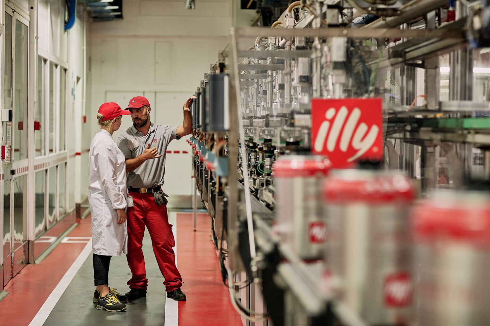

La nostra azienda e’ stata fondata a Trieste nel 1933 da Francesco Illy. Nel 1934 inventa e brevetta il sistema di confezionamento a "pressurizzazione con gas inerte", per la conservazione degli aromi del caffe’ all'interno del barattolo. Nel 1935 deposita il brevetto ingegneristico di Illetta, macchina per l'espresso professionale di casa illy. Nel 1947, Ernesto, figlio di Francesco entra in azienda e fa subito valere la sua laurea in chimica realizzando il primo laboratorio chimico aziendale, . creando anche sinergie scientifiche con istituzioni internazionali. . Nel 1965 viene costruita l'attuale sede amministrativa e produttiva dell'azienda.Nel 1974 arriva il terzo brevetto internazionale: le cialde di carta monoporzione di caffe’ espresso, preludio alle ESE. Negli anni 1980, la terza generazione di imprenditori della famiglia Illy, vede Riccardo Illy, figlio di Ernesto, apportare in azienda il valore del marketing, con approccio innovativo verso la distribuzione organizzata e l'apertura verso nuovi mercati internazionali. Nello stesso periodo Ernesto sta modificando un macchinario di selezione cromatica automatica dei diamanti, in maniera che possa scegliere solo i chicchi di caffe’ perfetti. Nel 1988 la illy brevetta il sistema per la selezione digitale dei chicchi di caffe’.Nel 1992, Francesco Illy, primogenito di Ernesto, commissiona a Matteo Thun di disegnare la nuova e attuale tazzina illy: nascono le illy collection che fanno diventare la tazzina illy la protagonista del rapporto con l'arte. Nel 1994 diventa amministratore delegato di illycaffe’ Andrea Illy, quartogenito di Ernesto, il cui impulso innovativo e culturale porta anche al rinnovo dello storico marchio; nel 1996, Francesco Illy fa realizzare a James Rosenquist, il nuovo marchio illy, consolidando il connubio tra il marchio illy e l’arte contemporanea. Qualche anno dopo, Andrea Illy crea l'Universita’ del caffe’ che dal 1999 promuove la cultura del caffe’ rivolgendosi a coltivatori, professionisti e studenti.L'internazionalizzazione del marchio permette di pensare e creare la catena di bar in franchising "Espressamente illy", capace di promuovere e diffondere in Italia e nel mondo la cultura del caffe’ di qualita’. Nel 2007 illy crea una nuova generazione di capsule per caffe’ espresso, il metodo Iperespresso (coperto da cinque brevetti internazionali) capace di creare una crema piu’ densa e persistente per il caffe’ espresso. L'anno successivo, grazie a una joint venture al 50% tra illycaffe’ e The Coca-Cola Company nasce illy issimo, bevanda in lattina al gusto di caffe’. Nel 2013 illy collabora con Kimbo e Indesit alla creazione del sistema in capsule UNO.Illycaffe’ e’ tra i partner ufficiali dell'Expo 2015 di Milano. Nel 2016, per la prima volta nella storia dell'azienda, viene nominato un amministratore delegato esterno alla famiglia, Massimiliano Pogliani, mentre Andrea Illy mantiene il ruolo di presidente della Illycaffe’ nel 2017 è stata l'unica italiana ad essere inserita all'interno dell'elenco delle '124 aziende pie’ etiche del mondo' fatto da Ethisphere.